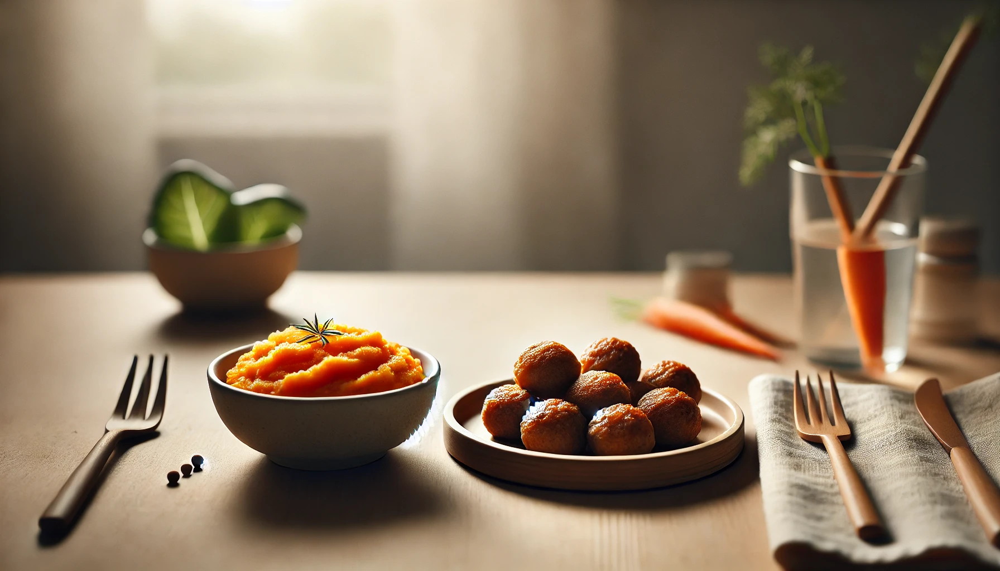
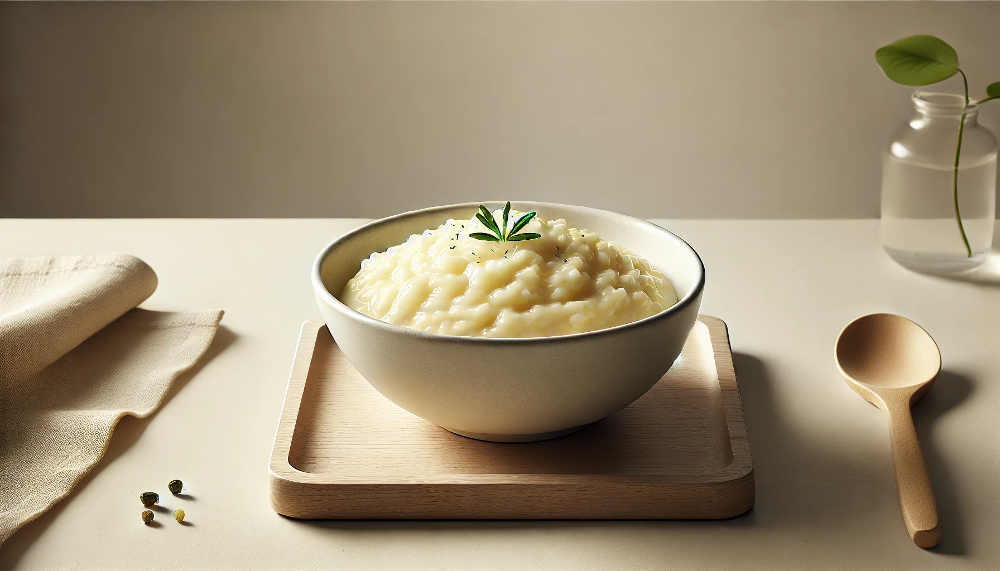
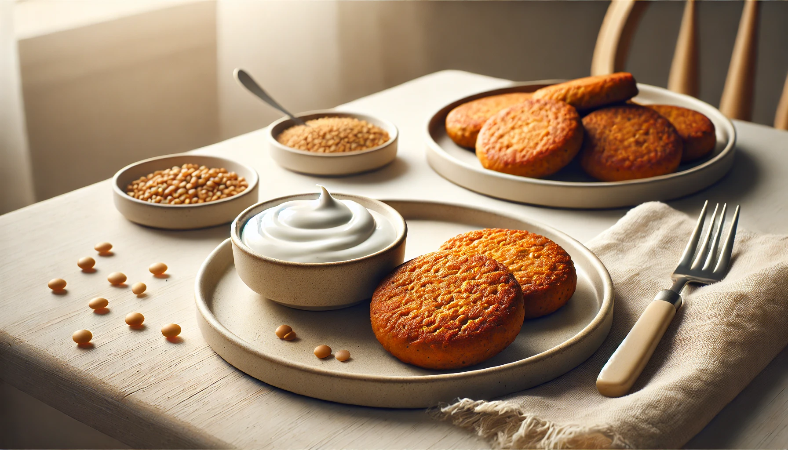
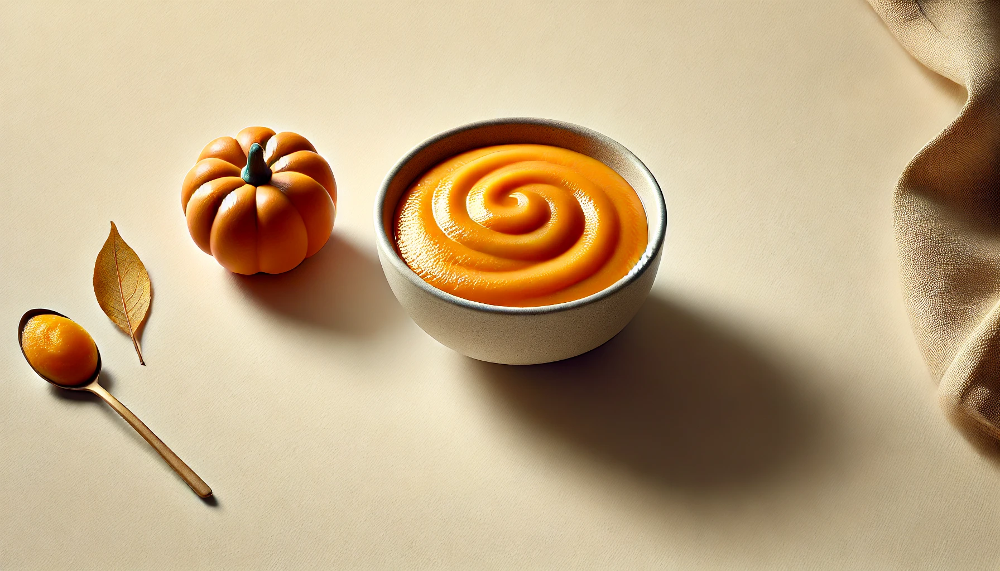
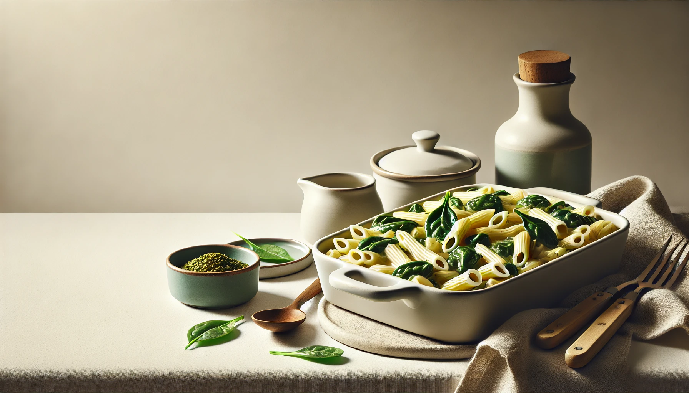
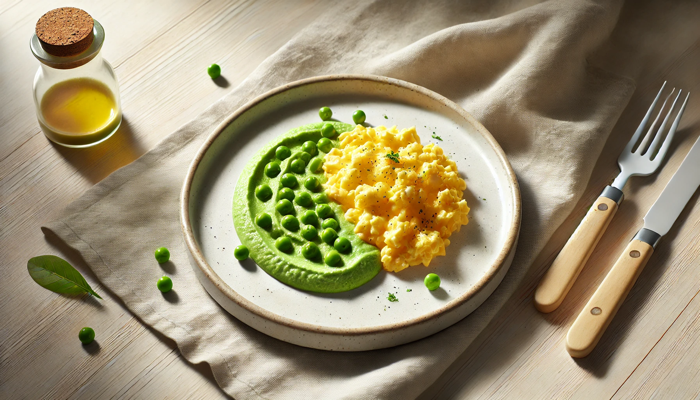

4-Week Toddler Dinner Plan
Week 1 | Cozy & Familiar
Comforting, colorful, and toddler-approved meals for stress-free evenings.

Dinner Recipe
Soft Turkey Meatballs & Mashed Carrots
Easy to chew, rich in iron and flavor.
Ingredients
¼ cup ground turkey
1 tsp breadcrumbs
½ cup steamed carrots (mashed)
Instructions
1. Form small meatballs with turkey and breadcrumbs.
2. Bake at 180°C (350°F) for 12–15 minutes.
3. Serve with mashed carrots.

Dinner Recipe
Creamy Vegetable Risotto
Silky rice packed with veggies.
Ingredients
¼ cup arborio or soft white rice
2 tbsp chopped soft veggies (zucchini, spinach, peas)
1 tbsp grated cheese
Instructions
1. Cook rice with veggies in water or low-sodium broth until soft.
2. Stir in cheese until creamy.

Dinner Recipe
Mini Lentil Patties & Cucumber Yogurt Dip
Protein-rich patties with a cool, creamy dip.
Ingredients
2 tbsp cooked lentils
1 tbsp grated carrot
1 tsp flour
2 tbsp plain yogurt + grated cucumber
Instructions
1. Mash lentils, mix with carrot and flour, shape into mini patties.
2. Pan-fry lightly until golden.
3. Serve with cucumber yogurt.

Dinner Recipe
Chicken & Pumpkin Purée Bowl
Sweet and savory blend perfect for scooping.
Ingredients
¼ cup cooked shredded chicken
¼ cup cooked pumpkin (mashed)
1 tsp olive oil
Instructions
1. Mix all together in a bowl.
2. Serve warm and mashed to desired texture.

Dinner Recipe
Baked Veggie Pasta
Melty, comforting, and family-friendly.
Ingredients
¼ cup small cooked pasta
2 tbsp chopped spinach or broccoli
1 tbsp shredded cheese
Instructions
1. Mix pasta, veggies, and cheese.
2. Bake in small ramekin until cheese melts. Cool and serve.

Dinner Recipe
Soft Scrambled Egg & Mashed Peas
Simple and full of protein.
Ingredients
1 egg
¼ cup peas (steamed and mashed)
1 tsp butter
Instructions
1. Scramble egg with butter.
2. Serve with mashed peas on the side.
Dinner Recipe
Tuna & Sweetcorn Rice
Gentle, flavorful mix with healthy fats.
Ingredients
2 tbsp cooked rice
1 tbsp canned tuna (in water)
1 tbsp soft sweetcorn
Instructions
1. Mix ingredients and warm slightly.
2. Mash if needed for texture.
Week 2 ☛ Here